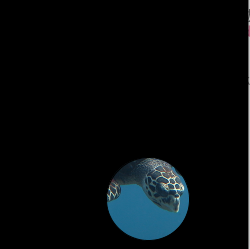
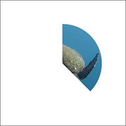
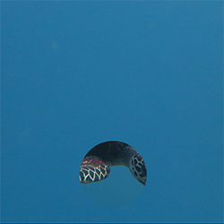
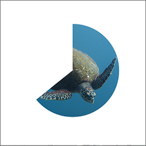

画像をくり抜く
ラーニングトレイル「9 画像ファイルを描く」で画像ファイルを読み込み画面に描画する方法を学びました。この画像の一部だけを切り取る方法を紹介します。PGraphicsクラス
size関数で作られる画面とは別に、描画域(オフスクリーンバッファ)を作り、それに対してくり抜く操作(クリッピング）を行い、操作が終わった画像を画面に描画します。オフスクリーンの描画域は、PGrapghicsクラスのオブジェクトです。 PGraphicsオブジェクトはcreateGraphics関数を使って作ります。
PGraphics pg; pg = createGraphics(100, 100); // 幅100ピクセル、高さ100ピクセルの大きさの描画域
PGraphicsオブジェクトへの描画は、beginDraw関数とendDraw()関数の間に挟みます。描画の方法は、画面（オンスクリーン）への描画と同じです。
円形にくり抜く
次のサンプルは、画像ファイルの一部を円形にくり抜いて表示した例です。次のように記述します。- (1) 2つのPGraphicsオブジェクトを作る。一つはくり抜く対象、一つはクリッピングマスク用。
- (2) くり抜く対象用のPGraphicsオブジェクトに画像ファイルの内容を描画。
- (3) クリッピングマスクに円を描く。
- (4) mask関数を使い、くり抜く対象のPGraphicsオブジェクトを、クリッピングマスク用PGraphicsオブジェクトでマスク。
- (5) マスクした結果を画面に描画。

【リストA1-1】
PGraphics pg, mask;
PImage imgT;
float cx, cy; //円形マスクの位置
float d; //円形マスクの直径
void setup() {
size(500, 500);
pg = createGraphics(width, height); //(1)くり抜く対象画像
mask = createGraphics(width, height); //(1)くり抜く形
imgT = loadImage("seaTurtle.png"); //画像ファイルのロード
cx = width * 3/5; //画面サイズが変わっても対応できるように位置を調整
cy = height * 4/5;
d = min(width, height) / 3;
}
void draw() {
background(0); //背景は黒
pg.beginDraw(); //(2)くり抜く対象に描画開始
pg.image(imgT, 0, 0, width, height); //(2)画像を描画
pg.endDraw(); //(2)描画終了
//円形のクリッピンマスク
mask.beginDraw(); //(3)クリッピングマスクに描画開始
mask.ellipse(cx, cy, d, d); //(3)円を描く
mask.endDraw(); //(3)描画終了
pg.mask(mask); //(4)くり抜く対象画像を円形にマスキング
image(pg, 0, 0); //(5)くり抜いた結果を画面に描画
}
上の例では、背景を黒で塗っていますが、背景に別の画像を設定すると、背景画像の上にクリップされた画像が載って、隠れている画像の一部を覗いているように見えます。
PImage imgS; //グローバル変数として用意
imgS = loadImage("noTurtle.png"); //setup関数内で画像をロード
background(imgS); //draw関数の先頭で背景に描画
ここで使った画像ファイルは、
画像ページにあります。
扇形にくり抜く
また、リストA1_1では、マスクの形は円形ですが、別の描画関数を使うことで、矩形や線分など任意の形にくり抜くことができます。下の例は、arc関数を使って扇形にクリップしています。arc関数の円弧の角度の開始位置は時計の3時の位置なので、わかりやすいように、90度左に回転して、12時の位置が0度になるように調整しています。変数angleは扇形の角度です。
mask.arc(width/2, height/2, d, d, radians(-90), radians(angle-90)); ↑中心の座標 ↑幅と高さ ↑円弧の開始位置 ↑円弧の終了位置

【リストA1-2】
PGraphics pg, mask;
PImage img;
float d = 250;
void setup() {
size(400, 400);
pg = createGraphics(width, height); //画像
mask = createGraphics(width, height); //くり抜く形
img = loadImage("seaTurtle.png");
pg.imageMode(CENTER); //image関数の座標は中心を原点にする
}
void draw() {
background(255);
pg.beginDraw(); //画像を描く
pg.image(img, width/2, height/2, img.width/2, img.height/2); //半分の大きさで
pg.endDraw();
float angle = 135;
mask.beginDraw(); //扇型のクリッピングマスク
mask.background(0);
mask.arc(width/2, height/2, d, d,radians(-90), radians(angle-90));
mask.endDraw();
pg.mask(mask);
image(pg, 0, 0);
}
演習問題

【問題A1-1】リストA1_1のクリッピングマスクの円の中心が、マウスカーソルの位置に応じて動くようにしよう。背景に画像を置くと、その画像が上の層にあって、そこに円形に穴があいて隠れている画像の一部が見えているような印象を受けます。2枚の画像を工夫して選び、マウスの移動で、隠れている画像を覗き見るようなスケッチを作成してみよう。
マウスが画面の外に出たら、円の位置を画面の外にしてクリッピングが起こらない（背景の画像だけが見える）ようにしよう。

【問題A1-2】リストA1_2の扇形の角度が、1秒ごとに変化して、秒針のように動くようにしてみよう。現在時刻の秒の値は、second関数によって得られます。その0から59の値を0～359の値にmap関数で換算し、角度として使います。